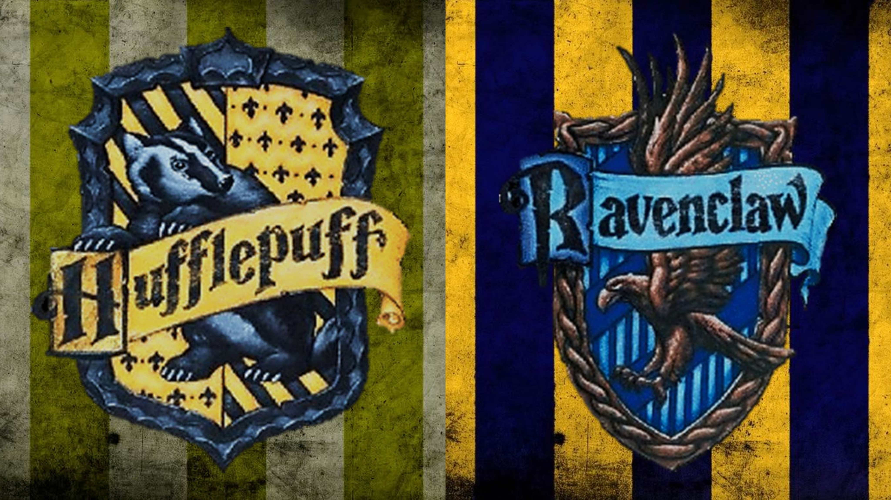

Gryffindor valued bravery, daring, nerve, and chivalry. Its emblematic animal was the lion, its representative gemstone was rubies, and its colours were scarlet and gold. Sir Nicholas de Mimsy-Porpington, also known as "Nearly Headless Nick", was the House Ghost. The founder of the House was Godric Gryffindor. Gryffindor corresponded to the element of fire.
Slytherin
Slytherin valued ambition, leadership, self-preservation, cunning and resourcefulness. Its emblematic animal was the serpent, its representative gemstone was emeralds, and its colours were emerald green and silver. The Bloody Baron was the House ghost. The founder of the House was Salazar Slytherin. Slytherin corresponded roughly to the element of water.

Hufflepuff
Hufflepuff valued hard work, dedication, patience, loyalty, and fair play. Its emblematic animal was the badger, its representative gemstone was yellow diamonds, and yellow and black were its colours. The Fat Friar was its ghost. The founder of the House was Helga Hufflepuff. Hufflepuff corresponded to the element of earth.
Ravenclaw
Ravenclaw valued intelligence, knowledge, curiosity, creativity and wit. Its emblematic animal was the eagle, its representative gemstone was sapphires, and its colours were blue and bronze. The ghost of Ravenclaw was the Grey Lady, who was the daughter of Rowena Ravenclaw, the House's founder. Ravenclaw corresponded to the element of air.